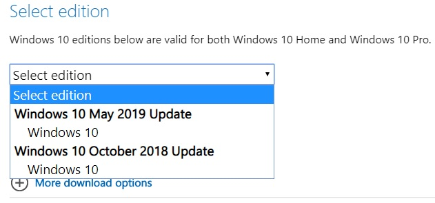

Download Windows 10 từ trang chủ Microsoft
July 7, 2019 | Windows 10 | 4Hướng dẫn tải về bản Windows 10 chính thức từ Microsoft bản chính chủ luôn không có virus, malware, ransomeware,...
Lời mở đầu:Hi there !
Lâu ngày lang thang trên Internet cuối cùng mình cũng mò ra được cách tải bản Windows 10 từ chính trang chủ Microsoft. Tại sao phải tải từ Microsoft trong khi gõ google là ra cả đống hở? Đơn giản thôi, vì trên Internet thì đéo tin tưởng được bố con thằng nào. Các trang web khác cung cấp những bản Windows không rõ nguồn gốc, ai mà biết được tụi nó đưa những virus, ransomware, malware,... gì vào. Một mình thằng Microsoft đưa vào là đủ chết rồi ^^. Mà ra quán người ta cài bản windows lấy ở đâu thì cũng chỉ chịu. Nên là cứ tự mình làm là an tâm nhất.
Tiện thể thì bữa nay là Thất Tịch gì đó thì phải, ngồi code từ sáng tới tối và méo có đậu đỏ mà ăn kaka.
Trước hết thì Windows 10 có gì đẹp:
Thôi ngưng xàm chó.
Truy cập vào trang web này nào: Link đây link đây
Có 3 phiên bản để lựa chọn là Windows 10, Win 8.1 và Win 7:

Còn thích Windows 10 thì chọn Windows 10 nào. Như bạn thấy Microsoft chỉ cho phép tải tool gián tiếp thôi, tốc độ tải xuống thì chậm, lag hết cả máy, nói chung hơi cay cú: Thế nên với phải xài đến mấy cái trick để lách luật ahihi. Vào một ngày đẹp trời đầy nắng và gió, tui mới phát hiện ra là nó có thể download trực tiếp khi truy cập trên Smartphone, mà download Win về Smartphone làm méo gì, chả nhẽ lại phải copy ra máy tính. Thế nên là đơn giản chỉ cần biến nền tảng Web trên máy tính thành trên Smartphone là được thôi.
Mở Inspect ra nào, bằng cách ẩn tổ hợp phím Ctrl + Shift + I hoặc đơn giản hơn, nhấp chuột phải chọn dòng cuối cùng, hoặc đơn giản hơn nữa, ấn F12. Màn hình lập tức chuyển thành 2 nửa như nài đây:
Rồi, ở cái hình biểu tượng cạnh chữ Elements bên cửa sổ bên trái ấy, nhập vào nó (Nhấp nhẹ hoy nha)
Hoặc dùng phím tắt Ctrl + Shift + M
ra thế này nài:
Chuyển hai con mắt sang cửa sổ bên phải, có nhìn thấy cái chữ Responsive không, lại nhấp một cách nhẹ nhàng vào đấy. Nó sẽ xổ ra một danh sách, chọn cái phiên bản nào bạn cảm thấy thích nhất, cái nào cũng được. Ở đây tui sẽ chọn Iphone X, vì sao á, tui thích, ai chả có ước mơ. Chọn xong chưa, giờ Refresh lại trang bằng cách F5 hoặc Ctrl + R
See, thấy có cái gì đó có thể download được rồi đó. Tắt cái của sổ bên phải đi, hết giá trị lợi dụng rồi. (Ấn F12 đi cho nhanh). Công việc còn lại là vô cùng đơn giản kaka.
Nhấp vào Select edition nào. Bản Windows 10 năm 2018 là build 1903, còn 2018 là build 1809. Chọn cái nào cũng được, theo tui thì chọn cái mới nhất đi xem nó có gì đặc biêt, tất nhiên là sẽ được microsoft chau chuốt hơn, bảo mật hơn, nhưng chắc chắn là nặng hơn.

Bợn chọn xong chưa, Confirm đi.
Select the product language, nhớ chọn English nhé ! < Then Confirm
Tiếp đến là chọn phiên bản, theo lẽ thường thì sẽ là: dưới 4GB Ram chọn 32 bit, trên 4GB RAM chọn 64 bit. Nhưng theo tui thì 4GB RAM chạy còn lag ấy chứ (Con mẹ Chrome ăn RAM như chó ăn c*t ấy),. Thế nên là cứ 64 bit mà tương, nhiều ứng dụng bây giờ nó viết dành cho máy 64 bit, đương nhiên méo chạy được trên win 32 bit rồi. À quên giải thích luôn cái này nữa, Nhiều phần mềm, file setup có ghi là x64 thì đúng là dành cho bản 64 bit rồi, nhưng có lại ghi là x86 thì là 32 bit nhá (chỗ này tỉnh táo vào). Vì sao lại vậy thì lằng nhằng lắm, thằng viết bào này không đủ kiến thức để giải thích.
Xong. Thế là Download thành công rồi đấy. File nặng tận 4,9 GB lận nên hơi lâu đấy. Mình đề nghị xài Internet Download Manager để download cho nhanh (Không biết search google, bố éo chỉ cho đâu ahihi).
-->>Ưu điểm của phương pháp này là:- Tải nhanh này
- Chính thống, chính chủ, chính thức, chính xác, chính trực
- Cũng bởi vì thằng viết đẹp trai nữa
Thấy không, dễ ợt ấy mà. Đó là bước khởi động để tiến tới công cuộc thành thạo level max cài Win dạo đỉnh kout, khai sáng máy tính. Xin mời hóng bài blog ấy nhé.
Lời kết:Dễ vkl ra ấy nhỉ. Thành thử ai cũng có thể theo nghiệp cài WIn dạo được đấy. Nhỡ sau này thất nghiệp thì cũng có con nghề đỉnh kout, mang tầm vóc cải tiến xã hội. Thôi xàm thế thôi. Nói chung là bài blog này cũng hữu ích với thú vị nhỉ. Tất nhiên có vài cách khác để lấy được bản Windows chính thức này, nếu có rảnh thì tui sẽ giới thiệu. À còn nữa, tui có key win 10 xịn, chuẩn hàng microsoft 200% nhé (tui chôm à lộn được trường cung cấp một cách gián tiếp), ai quan tâm thì chủ động liên lạc tui cho free, ai thành tâm thì ủng hộ tý, cũng rẻ ý mà, lấy nửa giá gốc thui (chắc chỉ tầm 3, 4 củ gì đó thui).
À có lẽ tui sẽ viết thêm một bài về việc chọn phiên bản HĐH phù hợp với cấu hình máy tính và Windows 10 Enterprise LTSC
p/s: Bài viết trên có đi tham khảo + chôm chỉa từ các web khác: quangtrimang.com,...